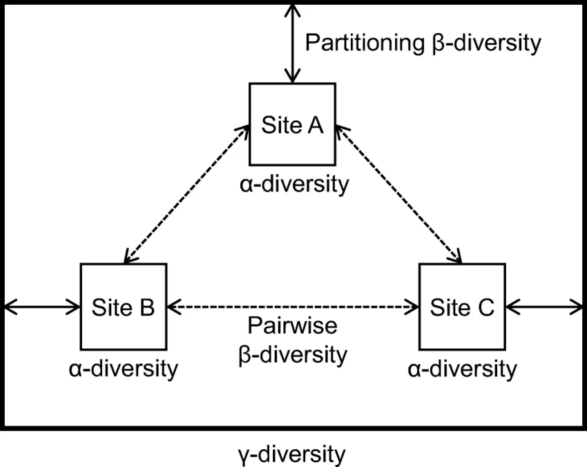
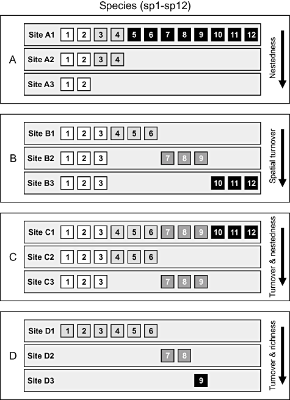

Resumo expandido: diversidade beta, dissimilaridade e partição da variação em comunidades
Módulo 4 - ecologia de comunidades
1 Introdução à diversidade beta e à heterogeneidade espacial das comunidades

A diversidade biológica é inerentemente heterogênea no tempo e no espaço. enquanto a diversidade alfa (\(\alpha\)) quantifica a riqueza local e a estrutura de abundâncias dentro de um ecossistema ou amostra delimitada, a diversidade beta (\(\beta\)) quantifica a variação na composição de espécies entre diferentes comunidades ou ao longo de gradientes ambientais e geográficos. formulada originalmente pelo ecólogo americano robert whittaker em 1960, a diversidade beta atua como o elo conceitual e matemático fundamental entre a escala local (\(\alpha\)) e a riqueza do inventário regional total (\(\gamma\)).
Na ecologia quantitativa contemporânea, a diversidade beta deixou de ser tratada como um mero descritor descritivo secundário da substituição de espécies para se converter no elemento central do diagnóstico dos processos geradores da biodiversidade. ao analisar a magnitude e a estrutura espacial da diversidade beta, os ecólogos conseguem discriminar a ação de forças determinísticas (como o filtro ambiental abiótico e as interações bióticas competitivas de nicho) de processos estocásticos (como a limitação de dispersão, a deriva demográfica e a colonização aleatória), fornecendo subsídios diretos para a tomada de decisão em biologia da conservação e restauração ecológica.
Neste resumo expandido, desenvolvemos a fundamentação teórica rigorosa, a álgebra das matrizes de dissimilaridade, as abordagens de partição aditiva e multiplicativa, a decomposição em substituição (turnover) e aninhamento (nestedness), as técnicas de ordenação multidimensional (NMDS e PCoA) e os testes estatísticos de hipóteses permutacionais (PERMANOVA e homogeneidade de dispersão).
2 Fundamentação conceitual e escala espacial: \(\alpha\), \(\beta\) e \(\gamma\)
A integração entre escalas espaciais é indispensável para responder como a biodiversidade regional é mantida. a relação entre a diversidade local, a substituição entre locais e o pool regional de espécies pode ser tratada sob duas formulações matemáticas principais:
2.1 Partição multiplicativa de Whittaker

Whittaker definiu a diversidade beta como uma razão adimensional entre a riqueza regional total (\(\gamma\)) e a riqueza média observada nas amostras locais (\(\bar{\alpha}\)):
\[\beta_W = \frac{\gamma}{\bar{\alpha}}\]
onde: * \(\gamma\) é o número total de espécies registradas no conjunto de todas as amostras do bioma ou região. * \(\bar{\alpha}\) é a riqueza média por parcela ou ponto de amostragem (\(\bar{\alpha} = \frac{1}{N} \sum_{i=1}^N S_i\)).
Interpretação teórica:
- se todas as parcelas amostradas contiverem exatamente as mesmas espécies, \(\gamma = \bar{\alpha}\), e portanto \(\beta_W = 1\) (ausência total de diversidade beta ou homogeneidade completa da paisagem).
- se cada parcela contiver um conjunto de espécies totalmente exclusivo sem nenhuma sobreposição com as demais, \(\gamma = N \cdot \bar{\alpha}\), resultando em \(\beta_W = N\) (diversidade beta máxima, onde \(N\) é o número de parcelas).
2.2 Partição aditiva de Lande
Proposta por Lande em 1996, a partição aditiva expressa todas as dimensões da biodiversidade na mesma unidade física e conceitual — o número absoluto de espécies:
\[\gamma = \bar{\alpha} + \beta_A \implies \beta_A = \gamma - \bar{\alpha}\]
A grande vantagem analítica da partição aditiva é permitir a decomposição hierárquica da diversidade em múltiplos níveis espaciais encadeados. por exemplo, em um estudo de ecologia paisagística com inventários de insetos em árvores, a diversidade regional (\(\gamma\)) pode ser particionada em:
\[\gamma = \bar{\alpha}_{árvore} + \beta_{entre\-árvores} + \beta_{entre\-fragmentos} + \beta_{entre\-bacias}\]
Essa propriedade aditiva permite aos pesquisadores identificar exatamente em qual escala espacial ocorre o maior ganho de espécies, orientando se os esforços de preservação devem focar na escala micro-local ou no planejamento do uso do solo regional.
3 Matrizes de distância e coeficientes de dissimilaridade ecológica
A comparação da composição entre pares de comunidades exige a construção de matrizes quadradas de dissimilaridade sintéticas. sejam dois locais \(i\) e \(j\) contendo espécies de um pool regional \(S\).
3.1 Coeficientes para dados de presença e ausência (binários)
quando dispomos de dados binários (ocorrência), a relação entre dois locais é resumida em uma tabela de contingência \(2 \times 2\): * \(a\): número de espécies presentes no local \(i\) e no local \(j\) (co-ocorrência). * \(b\): número de espécies presentes no local \(i\), mas ausentes no local \(j\) (exclusivas de \(i\)). * \(c\): número de espécies presentes no local \(j\), mas ausentes no local \(i\) (exclusivas de \(j\)). * \(d\): número de espécies ausentes em ambos os locais, mas presentes no pool regional.
3.1.1 Dissimilaridade de Jaccard (\(D_J\))

O índice de Jaccard desconsidera as ausências duplas (\(d\)) e calcula a proporção de espécies não compartilhadas sobre o universo total de espécies registradas em pelo menos um dos dois locais:
\[D_J = 1 - \frac{a}{a + b + c} = \frac{b + c}{a + b + c}\]
3.1.2 Dissimilaridade de Sørensen (\(D_S\))
o índice de Sørensen concede peso duplo aos encontros conjuntos (\(a\)):
\[D_S = 1 - \frac{2a}{2a + b + c} = \frac{b + c}{2a + b + c}\]
Propriedade: \(D_S\) é sempre menor ou igual a \(D_J\) para o mesmo conjunto de dados, pois a ponderação das espécies compartilhadas reduz a percepção de distância.
3.1.3 O Problema dos duplos-zeros

Quando uma espécies X está ausete de duas amostras elas: são similares? ou são diferentes?
3.2 Coeficientes para dados quantitativos (abundância e biomassa)
quando dispomos de contagens de indivíduos ou estimativas de biomassa, índices que incorporam as abundâncias relativas fornecem uma resolução ecológica drasticamente superior, distinguindo locais com as mesmas espécies mas com estruturas de dominância alteradas.
3.2.1 Dissimilaridade de Bray-Curtis (\(D_{BC}\))
a dissimilaridade de bray-curtis é o coeficiente quantitativo mais utilizado na ecologia de comunidades. é formulada por:
\[D_{BC} = \frac{\sum_{k=1}^S |y_{ik} - y_{jk}|}{\sum_{k=1}^S (y_{ik} + y_{jk})}\]
onde \(y_{ik}\) e \(y_{jk}\) representam as abundâncias registradas para a \(k\)-ésima espécie nos locais \(i\) e \(j\).
3.2.2 Distância de Gower
para matrizes heterogêneas contendo tanto variáveis contínuas de abundância quanto traços categóricos e fatores ordenados, utiliza-se a distância de gower (\(D_G\)), que padroniza cada variável pelo seu intervalo de variação antes de calcular a média das dissimilaridades.
3.3 Exemplo numérico resolvido passo a passo
vamos calcular detalhadamente a matriz de dissimilaridade de bray-curtis entre três parcelas de amostragem (\(P_1, P_2, P_3\)) com contagens de 4 espécies arbóreas:
| parcela | espécie A (Euterpe) | espécie B (Cecropia) | espécie C (Inga) | espécie D (Tabebuia) |
|---|---|---|---|---|
| Parcela \(P_1\) | 60 | 30 | 10 | 0 |
| Parcela \(P_2\) | 40 | 20 | 30 | 10 |
| Parcela \(P_3\) | 0 | 0 | 50 | 50 |
3.3.1 Cálculo de \(D_{BC}(P_1, P_2)\):
- somatório das diferenças absolutas por espécie: \[|60-40| + |30-20| + |10-30| + |0-10| = 20 + 10 + 20 + 10 = 60\]
- somatório das abundâncias totais observadas nas duas parcelas: \[(60+40) + (30+20) + (10+30) + (0+10) = 100 + 50 + 40 + 10 = 200\]
- cálculo da razão: \[D_{BC}(P_1, P_2) = \frac{60}{200} = 0,300 \text{ (ou 30% de dissimilaridade)}\]
3.3.2 Cálculo de \(D_{BC}(P_1, P_3)\):
- somatório das diferenças absolutas por espécie: \[|60-0| + |30-0| + |10-50| + |0-50| = 60 + 30 + 40 + 50 = 180\]
- somatório das abundâncias totais: \[(60+0) + (30+0) + (10+50) + (0+50) = 60 + 30 + 60 + 50 = 200\]
- cálculo da razão: \[D_{BC}(P_1, P_3) = \frac{180}{200} = 0,900 \text{ (ou 90% de dissimilaridade)}\]
resultado: \(P_1\) e \(P_2\) compartilham a maioria das espécies com abundâncias semelhantes (\(D_{BC} = 0,30\)), enquanto \(P_1\) e \(P_3\) apresentam composição drasticamente distinta (\(D_{BC} = 0,90\)).
4 Decomposição da diversidade beta: substituição (turnover) vs. aninhamento (nestedness)

uma das descobertas mais marcantes da ecologia quantitativa na última década foi a demonstração de que valores idênticos de dissimilaridade total podem derivar de processos biológicos opostos. o ecólogo espanhol andrés baselga (2010) formalizou a decomposição aditiva da dissimilaridade de sørensen em duas componentes distintas:
\[\beta_{sor} = \beta_{sim} + \beta_{nes}\]
4.1 1. Substituição de espécies (turnover, \(\beta_{sim}\))
representa a substituição real de espécies de um local para outro ao longo de um gradiente espacial ou ambiental. o turnover reflete a triagem por nicho ecológico, a presença de barreiras biogeográficas ao fluxo gênico ou a especiação alopátrica. a fórmula da componente de turnover de simpson é:
\[\beta_{sim} = \frac{\min(b, c)}{a + \min(b, c)}\]
4.2 2. Aninhamento (nestedness, \(\beta_{nes}\))
ocorre quando a comunidade de menor riqueza é um subconjunto estrito (subset) das espécies encontradas na comunidade de maior riqueza. o aninhamento reflete processos de empobrecimento sequencial, como a perda gradativa de habitats, gradientes de estresse ambiental severo ou filtragem por tamanho de fragmento. a componente de aninhamento é obtida por subtração:
\[\beta_{nes} = \beta_{sor} - \beta_{sim}\]
4.3 Relevância estratégica para a tomada de decisão em conservação
a partição de baselga é uma ferramenta indispensável para o planejamento de redes de unidades de conservação:
paisagem dominada por turnover (\(\beta_{sim} \gg \beta_{nes}\)): cada fragmento contém espécies únicas e insubstituíveis. a estratégia de conservação deve focar na proteção de múltiplos fragmentos espalhados por toda a bacia ou bioma.
paisagem dominada por aninhamento (\(\beta_{nes} \gg \beta_{sim}\)): os fragmentos menores e mais pobres contêm apenas as espécies mais generalistas que já estão presentes no fragmento maior. a estratégia de conservação deve concentrar os recursos financeiros na proteção do maior e mais rico fragmento remanescente.
5 Aplicação ao modelo analógico de LEGO
no modelo análogo de LEGO desenvolvido ao longo desta disciplina, os quatro sacos de 100 peças representam quatro comunidades sob diferentes cenários de amostragem e perturbação:
- Saco A (Hiperdominante): simula uma comunidade sob impacto de invasão biológica.
- Saco B (Log-normal): simula a comunidade florestal nativa de referência.
- Saco C (Uniforme): simula uma comunidade de monocultura ou paisagem planejada.
- Saco D (Muitas espécies raras): simula um ambiente heterogêneo de micro-habitats.
6 referências bibliográficas
- BASELGA, Andrés. Partitioning the turnover and nestedness components of beta diversity. Global Ecology and Biogeography, v. 19, n. 1, p. 134-143, 2010.
- BEGON, Michael; TOWNSEND, Colin R.; HARPER, John L. Ecologia: de indivíduos a ecossistemas. Tradução de Adriano Sanches Melo et al. 4ª ed. Porto Alegre: Artmed, 2007.
- CARSON, Walter P.; SCHNITZER, Stefan A. (Eds.). Tropical forest community ecology. Oxford: Wiley-Blackwell, 2008.
- DA SILVA, Fernando Rodrigues; GONÇALVES-SOUZA, Thiago; PATERNO, Gustavo Brant; PROVETE, Diogo Borges; VANCINE, Maurício Humberto. Análises ecológicas no R. Recife: Nupeea, 2022.
- KEDDY, Paul A.; LAUGHLIN, Daniel C. A framework for community ecology: species pools, filters and traits. Cambridge: Cambridge University Press, 2021.
- LEGENDRE, Pierre; LEGENDRE, Louis. Numerical ecology. 3rd ed. Amsterdam: Elsevier, 2012.
- RICKLEFS, Robert E.; RELYEA, Rick. A economia da natureza. 7ª ed. Rio de Janeiro: Guanabara Koogan, 2016.
- WHITTAKER, Robert H. Vegetation of the Siskiyou Mountains, Oregon and California. Ecological Monographs, v. 30, n. 3, p. 279-338, 1960.